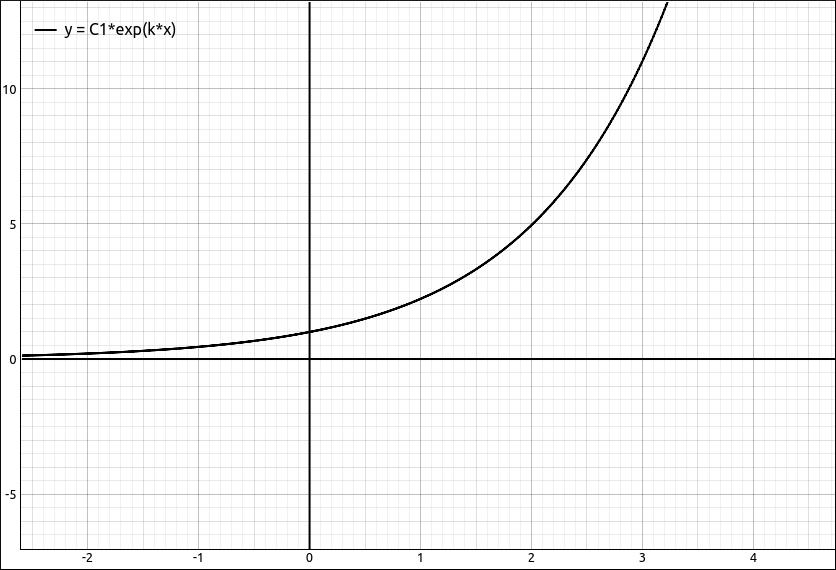
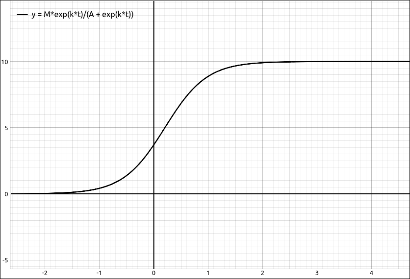

Ordinary Differential Equations#
A quick jaunt into Differential Equations is usually done in most Calculus sequences at some point. This tool is for solving Ordinary Differential Equations (ODE) for those that are normally encountered in Calculus. Although it can also be used for an introductory Differential Equations class it was not designed to accommodate all the topics seen in one of those courses.
Inputting a Differential Equation into the CAS#
The hardest part about using this tool is inputting a differential equation into the CAS. The syntax here is a cumbersome.
To input the derivative of a function you need to designate a “variable” as a function and then use the diff syntax to denote a derivative. The easiest way to designate a “variable” as a function is to use functional notation. For example, f(x) will designate f as a function with independent variable x. As in mathematics, the name of the function and the independent variable are irrelevant, so g(x), f(t), g(t), and george(john) are all legitimate functional expressions. To designate the derivative we add .diff(x, n) at then end of the expression, where x is the independent variable and n is the order of the derivative. So for example, if we wanted the second derivative of f with respect to x we would use the syntax f(x).diff(x, 2). The program (really SymPy) also accepts another notation Derivative(fct, (var, n)) where fct is the function, var is your independent variable, and n is the order of the derivative. So for example, if we wanted the second derivative of f with respect to x we could also use the syntax Derivative(f(x), (x, 2)). They are not much different in length and complexity, use whichever you prefer.
As with all equations in this program we assume the equation is equal to 0. So if we wanted the differential equation \(\frac{d^{2}}{d x^{2}} f{\left(x \right)} = f{\left(x \right)}\) we would input it as \(\frac{d^{2}}{d x^{2}} f{\left(x \right)}- f{\left(x \right)}\), that is, f(x).diff(x, 2) - f(x) or Derivative(f(x), (x, 2)) - f(x).
A few examples,
Exponential Growth Equation: \(\frac{d}{d x} f{\left(x \right)} = k f{\left(x \right)}\) should be altered to \(- k f{\left(x \right)} + \frac{d}{d x} f{\left(x \right)}\) and can be input as either f(x).diff(x)-k*f(x) or -k*f(x) + Derivative(f(x), x). Note that you can drop the derivative order if it is just the first derivative.
The Logistic Differential Equation: \(\frac{d}{d t} f{\left(t \right)} = k \left(1 - \frac{f{\left(t \right)}}{M}\right) f{\left(t \right)}\), manipulated to \(- k \left(1 - \frac{f{\left(t \right)}}{M}\right) f{\left(t \right)} + \frac{d}{d t} f{\left(t \right)}\) can be input with f(t).diff(t)-k*f(t)*(1-f(t)/M).
Oscillatory Motion: \(\frac{d^{2}}{d x^{2}} f{\left(x \right)} = -k f{\left(x \right)}\) manipulated to \(k f{\left(x \right)} + \frac{d^{2}}{d x^{2}} f{\left(x \right)}\) can be input as k*f(x) + f(x).diff(x, 2).
Using the ODE Solver#
The ODE solver can solve single differential equations as well as systems of differential equations. Although systems of differential equations are usually not studied in an introductory Calculus sequence this option allows you to solve these systems.
Solving Single Differential Equations#
Once the ODE is input into the CAS the use of the solver is fairly easy. When you select this option a dialog box will appear asking the user to specify the function to be solved for, usually this is automatically filled in. There is also a variable assumptions selection at the bottom. For more about variable assumptions see the discussion at the bottom of this page. In most cases you will leave the assumptions alone (everything real) but sometimes you may need to change these.
The output is in the form of an equation, for example, \(f{\left(x \right)} = C_{1} e^{- x} + C_{2} e^{x}\). Most of the time you will want the right hand side of the equation to work with. To extract the right hand side select Algebra > Equations > Right Hand Side
We will look at several examples.
Exponential Growth Equation: \(\frac{d}{d x} f{\left(x \right)} = k f{\left(x \right)}\) should be altered to \(- k f{\left(x \right)} + \frac{d}{d x} f{\left(x \right)}\) and can be input as either f(x).diff(x)-k*f(x) or -k*f(x) + Derivative(f(x), x). Note that you can drop the derivative order if it is just the first derivative. Solving this with the ODE Solver we get the exponential growth equation, \(f{\left(x \right)} = C_{1} e^{k x}\). If we extract the right hand side and then graph the expression we get

\(f{\left(x \right)} = C_{1} e^{k x}\)#
as well as a slider for the C1 constant that allows the user to see the family of solutions to the differential equation.
The Logistic Differential Equation: \(\frac{d}{d t} f{\left(t \right)} = k \left(1 - \frac{f{\left(t \right)}}{M}\right) f{\left(t \right)}\), manipulated to \(- k \left(1 - \frac{f{\left(t \right)}}{M}\right) f{\left(t \right)} + \frac{d}{d t} f{\left(t \right)}\) can be input with f(t).diff(t)-k*f(t)*(1-f(t)/M). If we solve this we get,
This is not the standard form for the logistic equation. If you studied logistic growth you are probably expecting something like
Computer Algebra Systems do not always give us expressions in the form we want them in. We can get closer to what we expect by doing the substitution that we would have done by hand, almost. If you work through solving the differential equation by hand there is point where you make the substitution \(A = -e^{-C_1M}\). We can do an equivalent substitution here to simplify the expression the program gave us. Do Algebra > Evaluate, in the variable input we will input the expression \(e^{-C_1M}\) which can be done with E^(-C1*M) or exp(-C1*M) and in the expression input we will put in -A, this returns
which simplifies to
This is not exactly the form we were aiming for but it is close. This form also graphs nicely and allows the user to manipulate the graph with sliders for M, A, and k.

Logistic Curve#
It would be better not to have to do some fancy substitutions but it does show that the evaluator is much more powerful than just substituting values into variables.
Oscillatory Motion: \(\frac{d^{2}}{d x^{2}} f{\left(x \right)} = -k f{\left(x \right)}\) manipulated to \(k f{\left(x \right)} + \frac{d^{2}}{d x^{2}} f{\left(x \right)}\) can be input as k*f(x) + f(x).diff(x, 2). Solving this differential equation gives us the expected,
A First Order Linear Equation: Say we wish to solve the first order linear equation \(\frac{d}{d x} f{\left(x \right)} - 3 x^{2} f{\left(x \right)} = x^{2}\). Manipulate this to \(- 3 x^{2} f{\left(x \right)} - x^{2} + \frac{d}{d x} f{\left(x \right)}\), which can be input as f(x).diff(x) - 3*x^2*f(x) - x^2. The ODE solver returns
Solving Systems of Differential Equations#
To solve a simultaneous system of differential equations place the differential equations into a list and then invoke the solver. Each of the differential equations in the list follow the same syntax as is given above for single differential equations. When the option is invoked the ODE dialog box will appear with a list of functions that were found in the system. In most cases you will not need to alter this list and simply click OK to solve the system.
When you input a system into the CAS you can input it in one statement or do it in a piecemeal fashion. For example, say we wanted to solve the system,
We could input, [g(x) + f(x).diff(x), f(x) + g(x).diff(x)] or we could input the two differential equations separately, g(x) + f(x).diff(x) and f(x) + g(x).diff(x) and then create a list from these with an expression like [R1, R2]. As long as the system is in a list before we try to solve it.
When we select the Calculus > Solve ODE option the function list will look like [f(x), g(x)] which is good and does not need to be altered. Clicking OK gives us the result,
Note that it is a list of lists of equations. If you need to extract the expressions you can use a combination of options from the Edit menu (list manipulation section) to do so.
Note
This will also work on systems of differential equations that are in an \(n \times 1\) matrix. For example, the example above could be input as a matrix,
then the solver will return,
Using the ODE Solution Checker#
The ODE solutions checker is a convenient tool for checking if an expression or equation satisfies a differential equation. You can use the evaluation tool from the Algebra menu to do that same thing but the ODE solution checker uses a stronger set of simplification methods and will, in general, return a better solution.
Checking Solutions to Single Differential Equations#
For a single ODE solution you simply select the differential equation and then select Calculus > Check ODE Solution, a dialog box will appear asking for the function or list of functions and an expression or list or expressions. Since we are dealing with a single ODE there should only be one function and one expression or equation. When dealing with systems od ODEs there will be lists of them.
The function should be automatically detected and filled in, if not input the function that is being checked, for example, f(x), g(x), etc. For the expression either input the expression you wish to check or more often the CAS designation of the solution you wish to check. The expression can be either an expression or an equation.
For example, say we input the differential equation 2*x*f(x)*(2*f(x) + 1) - f(x).diff(x), which is,
If we do Calculus > Solve ODE we get the solution, in equation form,
If we assume that the differential equation came in as R1 and the above solution was R2, to check the solution, select R1 and in the expression input of the checking dialog box input R2 the result is, \(\left( \text{True}, \ 0\right)\). The first entry is true or false, true meaning that the solution checks and if it were false that would have meant that the solution did not check. The second entry in the tuple is the result of the expression after the function has been substituted into the differential equation and simplified.
We could have also just input the expression on the right hand side of the solution equation. If we select the solution equation then select Algebra > Equations > Right Hand Side it will extract the right hand side expression, assume it came in as R4. If we select the differential equation and then Calculus > Check ODE Solution, and then input R4 into the expression input we get the same result.
You do not need to use a CAS result in this option, you can also simply input the expression. For example, if we gave the same differential equation to GeoGebra the result would be,
If we wished to check this solution we could select the differential equation and then select Calculus > Check ODE Solution, and then input exp(x^2)/(C1 - 2*exp(x^2)), we get the same result \(\left( \text{True}, \ 0\right)\).
Note
Several notes about the ODE solution checker.
First, it may return false even if the solution is a solution to the ODE, it depends if the simplification is powerful enough to return exactly 0 for the check. In these cases you can also check the solution graphically. Extract the second expression using options from the Edit manu, and graph it, if it is equivalently 0, that is, graphs as the x-axis then the expression should have reduced to 0 and returned true.
We could have checked the solution using the evaluation option from the Algebra menu. Select the differential equation, then select
Algebra > Evaluate, input the functionf(x)and the expression for the solution. Note here we cannot use the equation. We can still use CAS results. Then selectAlgebra > Simplifyto simplify the expression. You may need to simplify the expression several times. If the result is 0 then the solution checks. As with the checker it is possible that the solution is valid but the simplification does not return 0 bt an expression that is equivalently 0. The above example is a good example of this. If we use the evaluation if the Algebra menu for this equation and solution we get,
which simplifies to
and then
if we graph this we get,

Graphic Solution Check#
Which appears to be equivalently 0 (for any value of \(C_1\)) so we would graphically conclude that we have a solution.
Clearly the algebraic methods in the solution checker are stronger than those of the simplify methods.
Checking Solutions to Systems of Differential Equations#
Checking the solutions to a system of differential equations is the same as checking a single solution except that we now have lists of functions and expressions. So in the functions input we have a list of functions and in the expressions input we have a list of expressions or solution equations.
For example, take the system of differential equations we used above, [g(x) + f(x).diff(x), f(x) + g(x).diff(x)].
The ODE solver gives us,
Using Edit > Extract from List > Extract All List Entries it givs us,
Assume this is R3. Select the differential equation, and then select Calculus > Check ODE Solution, the functions input should already have [f(x), g(x)] in it, which is what we want. Input R3 for the expressions and click OK. The result is \(\left( \text{True}, \ \left[ 0, \ 0\right]\right)\). As with the single solution output the True means that the equations checked and the two 0s are the results from evaluation and simplification. We could have also used a list of expressions and not equations. For example, if we do Algebra > Equations > Right Hand Side on the solution we will get just the list of expressions,
Assume this is R5. If we redo our check using R5 in place of R3 above we get the same result. In this case the program assigns expressions to functions by position. That is, the function list was [f(x), g(x)] and the expression list was \(\left[ C_{1} e^{- x} - C_{2} e^{x}, \ C_{1} e^{- x} + C_{2} e^{x}\right]\) so the program assigns the first expression to f(x) and the second to g(x). That is, it checks the solutions,
Note
As with checking single expressions the program may return false even if the solution is a solution to the ODE system, it again depends if the simplification is powerful enough to return exactly 0 for the check. In these cases you can also check the solution graphically. Extract the second expressions using options from the Edit manu, and graph them, if they are equivalently 0, that is, graphs as the x-axis then the expressions should have reduced to exactly 0 and the check returned true.
Variable Assumptions#
Assumptions#
Assumptions about variables are essentially what type of number does the variable represent. In most cases in an introductory Calculus sequence you simply assume that all variables represent real numbers, and sometimes complex numbers. The default setting for variables is as a real number except for solving equations where we use complex numbers.
As a classic example, say we input sqrt(x^2) into the CAS, the entry would be displayed as,
If we select Algebra > Simplify, a simplification that makes no assumptions about the variables, the result is still,
But if we use Algebra > Special Simplifications, leave the settings as is, and click OK the result is,
The difference is that the default domain for x in the Special Simplifications dialog was a real number. In the real number system, \(\sqrt{x^{2}} = \left|{x}\right|\) but in the complex number system it is not. For example, \(\sqrt{i^{2}} = -1 \neq \left|{i}\right| = 1\).
Another classic example is in the study of l’Hospital’s Rule. Marquis de l’Hospital published the very first Calculus textbook in 1696, where l’Hospital’s Rule is first seen in print. l’Hospital did not discover this rule, the Swiss mathematician John Bernoulli (1667–1748) is the one who discovered the method. l’Hospital and Bernoulli had an interesting business relationship where l’Hospital purchased the rights to this method, which is why it is named after him and not Bernoulli. In his book l’Hospital wanted to calculate,
which is a \(\frac{0}{0}\) indeterminate form and hence can be attacked using l’Hospital’s Rule. This expression also assumed that \(a > 0\).
If we put this expression into our CAS (-a*(a^2*x)^(1/3) + sqrt(2*a^3*x - x^4))/(a - (a*x^3)^(1/4)), then select Calculus > Limit, when the limit dialog comes up input x for the variable and a for the limit point, and click OK. The result will be,
It should be fairly obvious that this does not work for a being a positive real number since the denominator is clearly 0 in this case. This time when we select Calculus > Limit we will change the data type of a to be a positive real, and leave x alone. This time the result is the correct answer for these assumptions of,
In the vast majority of cases you will not need to do anything with variable assumptions. The reason we incorporated the ability to specify assumptions about the variable data type is that in a few instances (like in the above examples) you may need to tell the program that variable belongs to a more restrictive domain.
Assumptions User Interface#
The variable assumptions user interface will look like one of the two following layouts.

Variable Properties User Interface#
or

Variable Properties Editor User Interface#
If it is the first of these then clicking the Edit Variable Properties button will open a dialog box with the second interface. The second is where the changes are made. In either of these each variable in the expression is listed with the data type we are assuming it belongs. In the second interface you can edit the domain by first selecting the variable from the list and then selecting its type by clicking on it.
The reason we included the first interface was that it was less intimidating and easier to accept as is,which is what the user will do in most cases. As noted above these assumptions do not need to be changed very often.